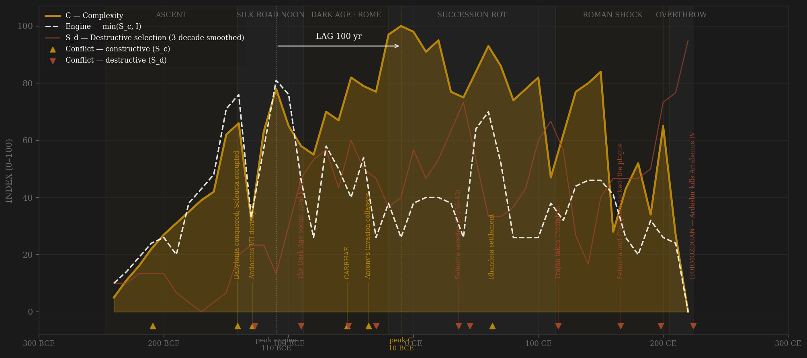
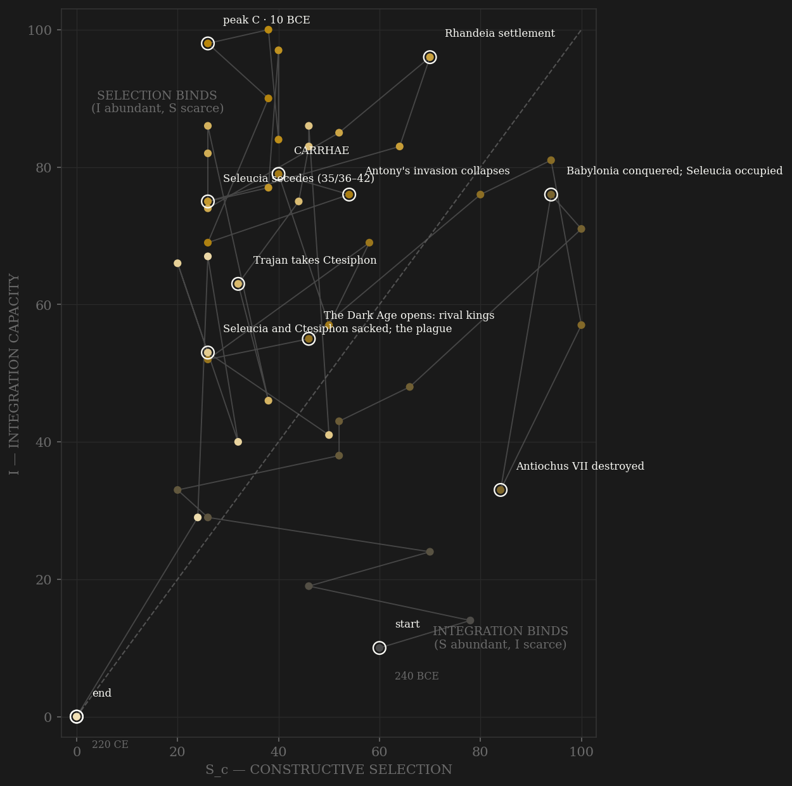

Parthia is the sample's high-S_d / low-I control case: a polity whose destructive selection runs chronically hot for two centuries while its fiscal integration never rises past a shallow plateau — on the deprecated lumped file's shared scale, Parthian peak I is 55 against Achaemenid 72 and Sasanian 58, the weakest centralization of the three Persian dynasties, and that shallow arc is the finding the within-polity normalization necessarily hides. The engine peaks early, around 110 BCE, where royal leverage over the great houses was briefly real: Mithridates II has just destroyed the last Seleucid reconquest's aftermath, mastered the Saka, minted empire-scale offices for Media and Babylonia, taken King of Kings, and received the first Han embassy — 20,000 horse paraded for Zhang Qian's successors, the transit corridor open at both ends. Complexity keeps compounding for another century on exactly that corridor — the Augustan settlement of 20 BCE converts the Roman contest into protocol, and peak C lands in the 10s BCE–0s CE, Ctesiphon and 600,000-strong Seleucia astride a tolled road from Han China to the Mediterranean. Lag +100, in the preregistered window under both definitions — but read the red line, not just the gold: from Phraates IV's fratricides onward the S_d series barely touches ground again. Four kings die violently in the two decades around the complexity peak. The signature pathology institutionalizes after 109 CE as permanent dual kingship — Sellwood's parallel drachm sequences are the king-list where the narrative record fails — and then Rome starts collecting: Trajan takes Ctesiphon in 116, Cassius sacks Seleucia in 165 and the plague follows his army out, Severus carries off 'a hundred thousand' in 198 and annexes the Mesopotamian artery. Each sack is an S_d spike by the Alaric rule; each recovery is shallower. The end is exact: Artabanus IV beats Caracalla's successor at Nisibis in 217 — the machine still wins frontier wars — while losing the interior to Ardashir, a client-king's son who kills him at Hormozdgan in April 224. The frontier record and the succession record diverged for two hundred years; the succession record won.

The trajectory enters at the bottom-left as a war-band with neither ladder nor treasury, climbs the integration axis through the conquest of Media and Babylonia — Seleucia absorbed intact, a Greek metropolis bolted onto a steppe monarchy — and crosses into the selection-binds region before the first century BCE is out. There it stays for the rest of its life: Parthia after Mithridates II never again lacks coordination relative to contest — it lacks contest. The great houses' hereditary grip floors channel A almost permanently; the phase portrait shows I riding high (the transit annuity, the vassal network that ran itself) while S_c oscillates near the left wall, dipping with every fratricide and Dark Age. The three Roman sacks knock the path down and left in three visible steps — 116, 165, 198 — each rebound smaller, and the terminal fall is nearly vertical: integration collapsing through the floor in two decades as Ardashir detaches the vassals one by one, S_c already at zero because there was no ladder left to contest. It dies in the corner where Rome died — pinned against the selection wall — but got there by the opposite route: Rome burned its contest in civil wars from abundance; Parthia never built an open contest at all.
Coded by locus and target, never by outcome. Parthia works the rule hard in both directions. Frontier victories over Rome — Carrhae, the destruction of Antony's siege train, Nisibis — are S_c however catastrophic for the loser: the coordination machinery on the Parthian side was never touched (the hard cap holds all of it to 0.30 weight). The three sacks of the twin capitals are S_d despite external origin: Trajan, Cassius and Severus each penetrated the core and burned the counting-house — the Alaric rule applied three times in a century. And the largest S_d entries are homegrown: the parricide of Phraates III, Phraates IV murdering father, thirty brothers and his own heir, Gotarzes' purges, Seleucia seceding for seven years, the mutilation of Meherdates — cropped ears as a constitutional device — and the permanent dual kingships the coins attest where the chronicles go silent. Surena's execution within a year of Carrhae is the Yue Fei precedent at full strength: the state destroying its own best commander because the ladder could not tolerate what merit had climbed it.
| YEAR | CONFLICT | CODE | CODING RATIONALE |
|---|---|---|---|
| 209 BCE | Antiochus III's anabasis | Sc | Hecatompylos taken, vassalage imposed (Polybius 10.27-31) — home satrapy occupied yet the dynasty and its machinery survive intact: Hannibal rule, frontier-contest locus |
| 141 BCE | Babylonia conquered; Seleucia occupied | Sc | Mithridates I takes the Seleucid east's counting-house intact and co-opts its polis elite on charter terms — external contest that builds the machine |
| 129 BCE | Antiochus VII destroyed | Sc | The last Seleucid reconquest dies with its king in Media (Justin 38.10) — the existential peer contest won; frontier locus throughout |
| 127 BCE | Saka ravage the interior; Himerus' tyranny | Sd | The unpaid steppe mercenaries turn inward and the viceroy burns Babylon's markets (Justin 42.1; Diodorus 34/35.21; Astronomical Diaries) — interior locus, the state's own instruments savaging its tax base |
| 90 BCE | The Dark Age opens: rival kings | Sd | Gotarzes I, Sinatruces, Orodes I in parallel — the apex contested in arms for a generation; Sellwood's overlapping drachm sequences are the primary evidence where every chronicle fails |
| 53 BCE | CARRHAE | Sc | Seven legions annihilated, Crassus dead at the parley (Plutarch Crassus 23-31) — the textbook hard-cap case: a frontier victory that never touches Parthia's own coordination machinery. Preceded by the parricide of Phraates III and the Orodes–Mithridates III civil war (Dio 39.56; Justin 42.4) — separate S_d in the decade ledger |
| 52 BCE | Surena executed | Sd | The victor of Carrhae killed within the year by his king's jealousy (Plutarch Crassus 33) — the Yue Fei precedent: merit climbed the ladder and the ladder killed it. Separate ledger row, one arc annotation (adjacent to Carrhae) |
| 36 BCE | Antony's invasion collapses | Sc | The Phraaspa siege train burned, the retreat bleeds ~24 legions' worth of men over two campaigns' arc (Plutarch Antony 37-51) — second Roman disaster in seventeen years, frontier locus, B |
| 30 BCE | Phraates IV's purges; Tiridates' usurpation | Sd | Father, some thirty brothers, then his own heir murdered; objecting nobles defect; a pretender takes the throne twice with the king's kidnapped son as a bargaining piece (Justin 42.5; Dio 51.18) |
| 36 CE | Seleucia secedes (35/36–42) | Sd | The empire's commercial hub — 600,000 people (Pliny NH 6.122) — closes its gates for seven years while a noble conspiracy crowns Tiridates III at Ctesiphon (Tac. Ann. 6.41-44, 11.8-9): the core machinery in open secession |
| 45 CE | Vardanes–Gotarzes fratricide war | Sd | Brothers' civil war, Vardanes assassinated at the hunt, Gotarzes' purges, Meherdates' ears cropped — mutilation as a constitutional device to disqualify the body from kingship (Tac. Ann. 11.8-10, 12.10-14) |
| 63 CE | Rhandeia settlement | Sc | A Roman army capitulates, then the compromise — Arsacid king, Roman crown for Armenia — converts the century's worst rivalry into procedure that holds for fifty years (Tac. Ann. 15.10-16; Dio 62.23): peer contest priced, not fought |
| 116 CE | Trajan takes Ctesiphon | Sd | First core penetration: the capital taken, the golden throne carried off, Seleucia burned in the revolt's suppression, a Roman-crowned puppet installed (Dio 68.28-30) — external origin, core locus: Alaric rule |
| 166 CE | Seleucia and Ctesiphon sacked; the plague | Sd | Avidius Cassius burns the palace and sacks Seleucia though it opened its gates; the pestilence follows his army out and empties both empires' cities (Dio 71.2; SHA Verus 8) — Seleucia never fully recovers |
| 198 CE | Severus sacks Ctesiphon; Mesopotamia annexed | Sd | 'A hundred thousand' carried off (Dio, epit.); legions planted at Nisibis and Singara — the richest western artery amputated permanently: third core penetration in a century |
| 224 CE | HORMOZDGAN — Ardashir kills Artabanus IV | Sd | Terminal: a client-king's son rolls up the vassal network while two Arsacids fight each other (parallel mints from 213, Sellwood), kills the king in battle 28 April 224 and takes Ctesiphon — the frontier machine had just beaten Rome at Nisibis 217; the succession machine killed the state |
| COMPONENT | GRADE | BASIS |
|---|---|---|
| S_c A — Elite-entry (0.40) | ○ scholar-coded | Satrap/sub-king appointment vs the seven great houses' (Suren, Karin, Mihran…) hereditary grip — Parthia's defining LOW and FALLING contestability. Briefly real under the conquest kings (empire-scale offices minted 148–121 BCE, philhellene polis elites co-opted on charter terms); frozen after Surena's execution and Phraates IV's purges into birth + harem + Rome-returned hostages. No exam corpus exists BY DESIGN (Tokugawa precedent — the near-floor is the finding). Coded per decade from Ellerbrock 2021, Debevoise 1938 |
| S_c B — External rivalry (0.30 hard cap) | ○ scholar-coded | Seleucid reconquests (Seleucus II, Antiochus III 209, Demetrius II 140-38, Antiochus VII 130-29), steppe pressure (Saka 130s-120s BCE, Alans 72-75 & 134-36 CE), Rome (Carrhae 53, Pacorus 40-38, Antony 36 BCE; Elegeia 161, Nisibis 217 CE). Frontier phases only — core-penetration episodes excised to S_d. This channel alone = the frozen Sc_v1_combat column |
| S_c C — Within-rules contest (0.30) | ○ scholar-coded | Megistanes king-making WHEN BLOODLESS: Phraates I's merit designation of Mithridates I (Justin 41.5.9-10, the early maximum), council installations of Orodes III and Vonones I, the brothers' concordat of 51 CE (Tac. Ann. 12.44), the Rhandeia formula 62-66, the clean accession of 147 — a channel that keeps collapsing into arms, which is the polity's pathology |
| S_d — Destructive | ○ scholar-coded + numismatic | Locus-and-target ledger: the fratricide successions, Gotarzes' purges, Surena's execution, Seleucia's seven-year secession, the permanent dual kingships (Sellwood's parallel drachm sequences = the primary evidence), three Roman core sacks (116/166/198), Caracalla's desecration of the Arbela tombs, terminal Ardashir revolt 208-224 |
| I — Integration | ○ anchor-interpolated | Backbone = 6 century anchors inherited from the deprecated lumped persia composite (-250…200), linearly interpolated between anchors with documented event deltas (Trajan/Cassius/Severus sacks, Seleucia secession, Dark Age…) — every non-anchor cell flagged [interp] in the notes. Content: Silk Road + royal-road transit (Isidore of Charax's stations), vassal-kingdom network, weak fiscal centralization throughout — the LOW PLATEAU (peak 55 vs Achaemenid 72 on the lumped file's shared scale) is the finding |
| C — Complexity | ○ anchor-interpolated | Same anchor structure. Content: Ctesiphon/Seleucia scale (Pliny's 600,000), Silk Road transit wealth (Mithridates II peak, Shiji 123), Hellenistic-then-Iranian court culture arc, Sellwood coin output/quality |
| E — Entropy | ○ anchor-interpolated | Anchor backbone + deltas from succession-war frequency and the Sellwood drachm-fineness decay arc; plague deltas 160s-180s |
| R — Population | ○ inherited | McEvedy-basis anchors through the lumped file, raw millions (~15→22M), NOT normalized; conservative Antonine-plague dents flagged |
47 decade rows (-240…220), built fresh 2026-07-06 by scripts/build_parthia_sicre.py — replaces the 6-row stub from the persia split. STRAIGHT-TO-V2 contestability build (0.40 elite-entry / 0.30 external hard cap / 0.30 within-rules, amendment defaults, no deviation); Sc_v1_combat = channel B alone, frozen alongside. Frozen-protocol lag under BOTH definitions: v2 engine -110 (Mithridates II apex) → C -10 (Augustan-peace transit peak) = +100 PASS; v1 engine -150 → C -10 = +140 PASS — no flip, both in window; note the v1 series is smoothing-sensitive (unsmoothed v1 engine sits at -40, the Pacorus/Antony decade, giving +30). INTERPOLATION CAVEAT: I/C/E/R backbones ride on only SIX inherited century anchors (-250, -200, -100, 0, 100, 200) from the deprecated lumped persia composite; all intervening decades are linear interpolation plus documented event deltas, flagged [interp] cell-by-cell in the notes columns and audited in components_audit.csv — decade-level wiggle in those columns is modeled, not evidenced; the S channels are coded fresh at decade level and carry the real decade resolution. Known artifact: the 198-sack notch partially rebounds at the inherited 200 anchor (raw amplitude ~6 points; the early-200s pre-Ardashir lull is historically real but its normalized size should not be over-read). Dark stretches scored conservatively rather than invented (c. 200-171 BCE; the 90s-70s BCE Dark Age, where Sellwood's and Assar's king-lists differ and the coding follows the disorder, not any one reconstruction; c. 76-108 CE, where Parthia is a list of mint-years; 170s-180s CE). ○ halo caveat applies: the same historians' narrative feeds both the contestability and complexity codings. Rebuild: build_parthia_sicre.py, then polity_report.py --slug parthia.